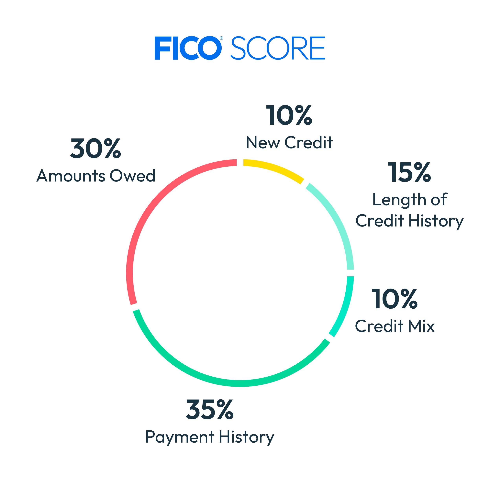

Never miss the due date.
Credit score maxing, simplified
Build credit without paying interest.
A strong score comes from a boring routine: pay on time, keep reported balances controlled, and open accounts deliberately.
Need help building credit or understanding your score?
Want to test a credit decision first?

Score breakdown
Credit score, in plain English.
Build the boring parts first. Time and consistency do more than constant tinkering.
Keep reported balances controlled.
Keep useful older accounts open.
Apply deliberately, not impulsively.
Let this develop naturally.
The payoff system
Use the card. Never fund a lifestyle.
A credit card is a payment tool. The goal is a clean history, not a carried balance.
Autopay the statement balance.
Pay the full statement balance by the due date. That is the clean baseline for avoiding purchase interest when your grace period applies.
Let 1-10% report.
If you are optimizing utilization, let roughly 1-10% appear on the statement, then pay it down to $0 after the statement reports and before the due date. Issuer timing varies.
Never pay interest for a score.
A small reported balance is not carried debt. Pay the statement balance in full before the due date so the score routine never becomes an interest charge.
Starter lane
A first card, not a stack.
Choose the lane that matches your profile. Read the issuer terms before applying.
Chase Freedom Rise
A simple starter lane if you are beginning to build credit and want a path into Chase.
Capital One Platinum Secured
Worth researching if a refundable deposit helps you begin with a controlled limit.
Citi Double Cash
A flat cash-back lane after your foundation is established. Do not add it just to collect accounts.
Recommended video
See the routine once. Make it automatic.
A useful walkthrough if you want to understand the workflow credit-score maxers follow without turning it into a daily obsession.
Educational only. Read myFICO's score-factor guide, confirm CFPB grace-period guidance, and review your reports through AnnualCreditReport.com.